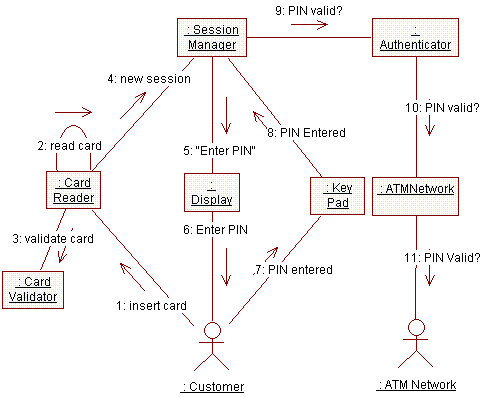

Work Guidelines: Use-Case-Analysis Workshop
Topics
Performing Use-Case Analysis as a group activity is important in the early
iterations as a team-building activity, and to establish a common vision of the
architecture of the system. It represents an important transition point in the
iteration, as it provides a bridge between the user’s view of the system
(represented by use-cases) and the system designer’s view of the system
(represented, at this point, by analysis classes).
In later iterations, or with an experienced team, Use-Case Analysis may be
performed more as an individual activity, if at all. When there is a well-formed
existing Design model, there may be less value in looking for new objects, since
existing classes in the design are likely to account for any system behaviors
required by new use cases.

The workshop should be organized as a brain-storming session, during which a
wide range of competence is needed from various areas:
- Requirements
- Analysis & Design
- Architecture
- Test
- Domain issues
- Methodology issues in general
Keep the workshop small: more than 6-7 persons will inhibit the free and open
participation of all members.
- A large white board to sketch on
- Plain A3 or legal paper; the size is depending on the largest format your
copy machine can manage.
- Tape
- Sticky notes (in several different colors, if possible)
- White board pens (red, green, blue).
- Pencils (red, green, blue).
- Walls to which papers can be attached
Plan on at least a few hours per use case on average. Early on, they will
take longer, but the time will go down as the number of new classes drops and
the group gains experience.
The following responsibilities occur during the workshop. It is a good idea
to rotate the responsibilities and let everybody try all responsibilities.
- Leader: leads the discussion, draws collaboration
diagrams on the white-board. It is natural that the method consultant take
on this responsibility at least at first, to get started; later the leader
role should be rotated among team members to let them gain experience.
- Class "Owner": records information about a set of
assigned classes. There will likely be several people with this role, each
with a set of classes.
- Secretary: makes a copy of the collaboration diagram sketched on
the large white-board, using the same colors as on the white board.
The team steps through the flow of events of the use case. For each behavior
identified in the use case, an object is identified that provides the behavior.
The object may be an instance of an existing class, or the class may need to be
created.
The leader draws the collaboration diagram on the white-board, and everybody
participates in the discussion.
When the use case has been diagrammed, a copy of it on an A3/Legal size paper
should be made, using the same colors as the white-board diagram.
At the same time, the responsibilities of the objects are documented using
A3/Legal paper, in the format described in the section "Tailoring" in Artifact:
Analysis Class. Record the responsibilities, events, and classes
collaborated with on sticky notes; this will make it easier to move
responsibilities around.
Drawing Collaboration Diagrams
The following conventions make the diagrams easier to read and work with
during the workshop.
- Draw all classes and links, and write object names, in blue.
- Write the text of the messages and what kind of information is sent over
the links, on sticky notes, in green. This makes it easier to read and
easier to move the messages around between objects as the object
responsibilities are balanced.
- Write the numbering of the messages (i.e. the order of the flow of events)
on separate sticky notes in red. This allows the sequence of events to be
adjusted as the responsibilities of objects are re-balanced during the
workshop.
Draw one diagram for the basic flow of the use case, and additional diagrams
for alternative flows. For simple use cases, a single view may suffice for all.

Example Collaboration Diagram for Use Case
Authenticate User in an Automatic Teller Machine.
Copyright
© 1987 - 2001 Rational Software Corporation
| |

|
 Work Guidelines >
Work Guidelines >